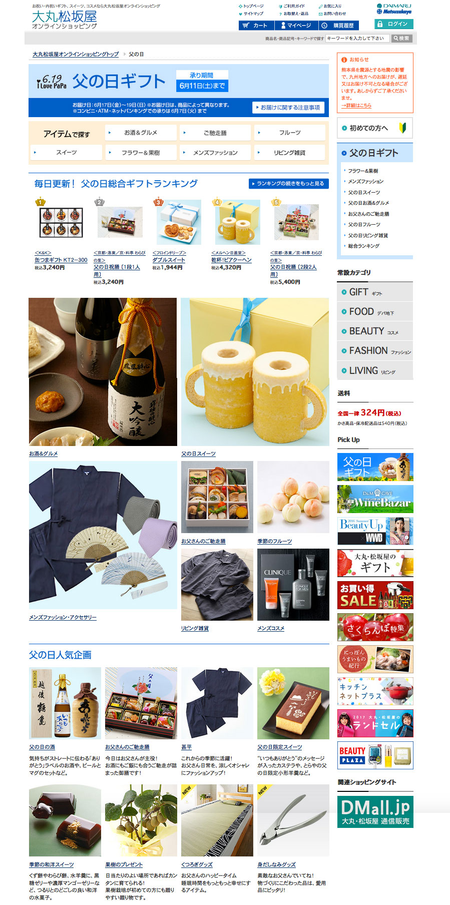
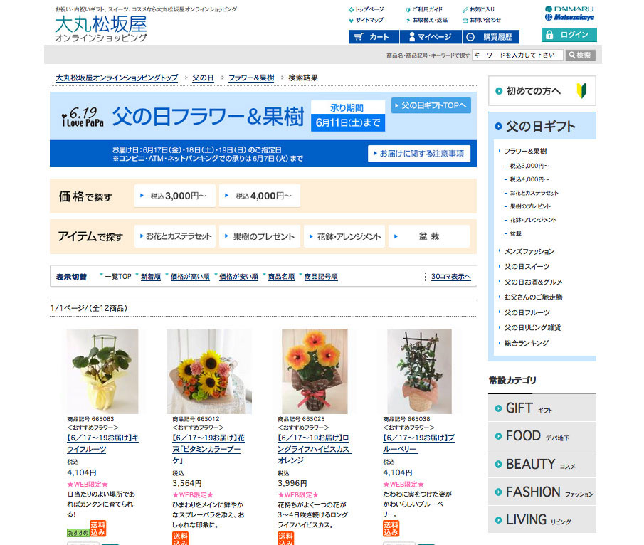
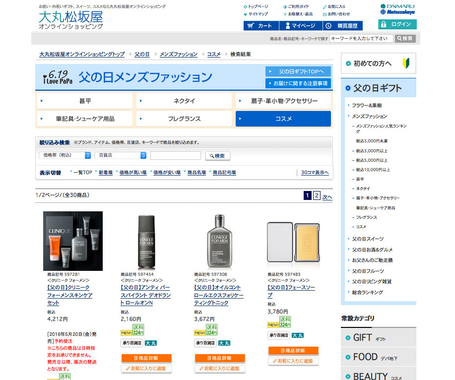

大丸松坂屋オンラインショッピング
https://www.konicaminolta.jp/business/products/index.html
株式会社あとらす二十一に所属していた時に更新していたサイトになります。主に製品ページの更新を週に2,3回の頻度で更新・新規制作していました。
- ※年ごとにサイトページが上書きされますので、担当箇所の体裁によく似た年度のページをサンプルとして上げています。
- 制作時期
- 株式会社あとらす二十一
- 担当箇所
- 季節ごとの特集ページ（父の日、母の日、敬老の日、クリスマス、おせち等々）のコーディングを行っていました。
- 使用ツール
- Photoshop CS6,DreamWeaverCS6
- 制作時間
- 1特集（約10ページ）20時間程（確認含め）
特集ページTOP
特集ランキングページ

特集カテゴリ別ページ その1
特集カテゴリ別ページ その2
